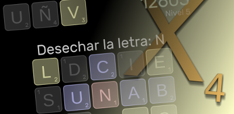
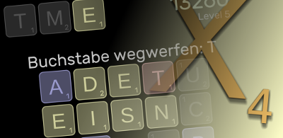
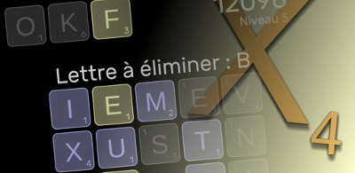
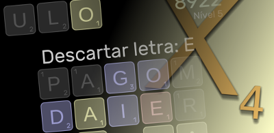
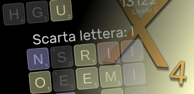
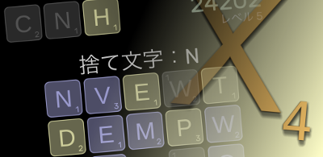
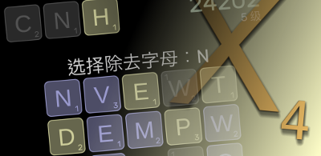

|
Localized App Store Descriptions
|
Español

Formar palabras. Acumular puntos. Un tablero lleno de fichas con
letras. Parece muy sencillo, ¿verdad? Sin embargo, cada palabra que forma
tiene un precio: hay que seleccionar una letra para desecharla. Y la
selección se vuelve cada vez más difícil hasta que no queda ninguna
letra.
- Reglas sencillas y fáciles de aprender, pero con una estrategia muy
interesante.
- No hay reloj ni límite de tiempo: tómese todo el tiempo que necesite.
Formule su plan, o bien use la primera palabra que se le ocurra; no hay
jueces.
- Con tres modos de juego: juegue en el modo de eliminación con un solo
tablero, avance al nivel del modo de resistencia o diviértase con el modo
interminable.
- Tableros de dos tamaños: completos con más opciones y mayor
dificultad, o más pequeños para juegos exprés con soluciones rápidas.
- Fichas de varios tamaños, estilos y combinaciones de colores (entre
otras, una combinación de colores de alto contraste para jugadores
daltónicos).
- Disponible en varios idiomas: juegue con listas de palabras en inglés,
español, alemán, francés, portugués o italiano, y sus conjuntos
correspondientes de caracteres y puntuaciones de letras.
|
Deutsch

Wörter bilden. Punkte sammeln. Ein Brett voller Buchstabensteine.
Scheint ziemlich einfach, nicht wahr? Aber jedes gebildete Wort hat seinen
Preis. Die Qual der Wahl. Ein Buchstabe muss weggeworfen werden. Und die
Auswahl wird immer schwieriger, bis fast keine Buchstaben mehr übrig sind
und es keine Auswahl mehr gibt.
- Die Regeln sind einfach, das Spiel ist leicht zu lernen, aber die
Entwicklung der Strategie ist eine Herausforderung.
- Kein Zeitgeber, keine Zeitbegrenzung nimm dir die Zeit und verfasse
einen Plan. Oder bilde einfach das erste Wort, das dir auffällt, wir
beurteilen niemanden.
- Drei Spielmodi der Eliminations-Modus, oder ein Level höher der
Ausdauer-Modus, oder einfach nur zum Spaß, der Endlos-Modus
- Zwei Spielbrettgrößen große Bretter mit mehr Optionen und größeren
Herausforderungen, oder kleinere Express-Spielbretter für schnellen
Spaß
- Verschiedene Formen, Stile und Farbschemata der Buchstabensteine
(einschließlich dem Farbschema mit hohem Kontrast für farbenblinde
Spieler)
- Mehrere unterstützte Sprachen: spiele mit Wortlisten in Englisch,
Spanisch, Deutsch, Französisch, Portugiesisch oder Italienisch mit den
entsprechenden Buchstabensets und Buchstabenwerten
|
Français

Créez des mots. Marquez des points. Une grille entièrement recouverte
de lettres. Ça paraît plutôt simple, n’est-ce pas ? Mais, pour chaque mot
épelé, il y a un prix à payer. Un choix. Une lettre dont vous devez vous
débarrasser. Et ce choix devient de plus en plus difficile à mesure que
vous manquez de lettres et que vos options diminuent.
- Les règles sont simples, faciles à apprendre, mais votre succès
dépendra de vos talents de stratège.
- Pas de minuteur, ni de limite de temps : prenez votre temps, élaborez
votre stratégie. À moins que vous ne préfériez opter pour le premier mot
qui vous saute aux yeux ? Vous êtes libre de jouer comme bon vous semble
!
- Trois modes de jeu : un mode d’élimination sur grille unique, un
passage au niveau supérieur avec le mode d’endurance, et un mode de jeu
infini rien que pour le plaisir.
- Deux tailles de grilles : des grilles complètes qui vous offrent plus
d’options et des défis plus motivants, ou des grilles express plus petites
si votre temps est compté.
- Les lettres se présentent dans plusieurs formes et styles, ainsi que
dans des couleurs différentes (y compris un affichage à contraste élevé
pour les joueurs daltoniens)
- Prise en charge multilingue : vous pouvez choisir parmi des listes de
mots anglais, espagnols, allemands, français, portugais ou italiens, avec
les caractères et valeurs de lettres correspondants.
|
Português

Soletrar palavras. Marcar pontos. Um tabuleiro cheio de casas com
letras. Parece bem simples, não é? Mas, para cada palavra soletrada, há um
custo. Uma escolha. Uma letra que foi jogada fora. E as escolhas tornam-se
cada vez mais difíceis até acabarem as letras e não haver nenhuma opção
disponível.
- Regras simples e fáceis de aprender, mas com uma profundidade
estratégica desafiadora
- Sem cronômetro nem limites de tempo – siga o seu ritmo, defina um
plano. Ou pegue a primeira letra que atrair sua atenção. Sinta-se livre
para decidir
- Três modos de jogo: jogue no modo eliminação em um único tabuleiro,
atinja outro patamar com o modo extra ou opte pelo modo eterno, só por
diversão
- Dois tamanhos de tabuleiro – o completo, para mais opções e maiores
desafios, e o expresso, que é menor, para um jogo rápido
- Diversos formatos de casas e esquemas de cor (incluindo um esquema de
cor de alto contraste para jogadores com dificuldade na identificação de
cores)
- Várias opções de idioma: jogue com listas de palavras em inglês,
espanhol, alemão, francês, português ou italiano, com os respectivos
conjuntos de caracteres e pontuação para as letras
|
Italiano

Trovare parole. Accumulare punti. Un tabellone pieno di lettere. Sembra
facile, vero? Ma ogni parola trovata ha un costo. Una scelta. Una lettera
deve essere eliminata. E la scelta diventa sempre più difficile fino a
quando non ci sono più lettere e non c'è più scelta.
- Regole semplici, facili da imparare, ma la strategia è complessa.
- Non c'è un tempo limite o un cronometro. Datti tempo per elaborare un
piano. Oppure scegli la prima parola che ti colpisce, non importa.
- Tre modalità di gioco: modalità Eliminazione con tavolo singolo,
modalità Resistenza per una sfida più intensa oppure modalità Infinito per
il gusto di farlo.
- Due dimensioni del tabellone: tabelloni completi con più opzioni e
difficoltà maggiori oppure tabelloni più piccoli per partite veloci.
- Tessere con forme, stili e schemi di colori di vario tipo (incluso uno
schema di colori ad elevato contrasto per giocatori daltonici).
- Varie lingue supportate: puoi giocare con elenchi di parole in
inglese, spagnolo, tedesco, francese, portoghese o italiano con i set di
caratteri e punteggi per lettere corrispondenti.
|
日本語

Elexiは、ボード上にあるタイルの文字を使って英語の単語を作るゲームです。スペルを当てる単純なゲームだけではないんです。単語が完成するごとに、文字を一つ捨てなければなりません。文字が少なくなるにつれて、その選択は難しくなっていきます！
- ルールは単純、簡単にプレイできます。でも、意外な奥深さにハマるでしょう。
- 時間無制限―じっくり攻略プランをたてるもよし、目に付いた単語から完成させていくのも自由に決められます。
- ゲームは３種類―「エリミネーション」はボード上で上がるまでプレイ、「エンデュアランス」はレベルアップが目指せます。「エンドレス」ではじっくり楽しんでください。
- ボードのサイズは２種類―「フル」ではボードのオプションが充実、よりチャレンジングなゲームが楽しめます。「エクスプレス」は小さなボードで簡単に終わることができます。
- タイルの形や色の配合（色覚異常のプレーヤーのためにハイコントラストの色配合もあります）は選べます。
- 多言語対応：英語、スペイン語、ドイツ語、フランス語、ポルトガル語、イタリア語に対応。
|
中文

逸乐思（Elexi)
由各式方块，各种游戏方式，别具一格的评分方法组成的新式拼字游戏，易学易玩，很快令人着迷。
- 规则简单易懂，挑战及方略需求自在其中。
- 无时限约束，减少压力。
- 三种游戏方式以供选择：逐步删减式、耐力式、及无限式。
- 全板及半板式以便选择多种挑战或轻松渡时。
- 多种方块形式以供选择，包括色盲患者的选择。
- 多种语文以供选择：英文、西班牙文、德文、葡萄牙文、意大利文。
|